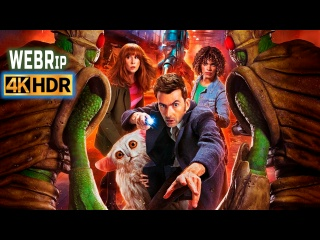

Все спецвыпуски (3 серии)
 | Все спецвыпуски (3 серии) |
The Star Beast
первый спецвыпуск к 60-летию
25 ноября 2023
Формат: 60-минутный эпизод
| Варианты озвучек: | * Разные: смотрите по инструкции встречается как в 14-м сезоне, так и отдельно... |
|---|---|
| Скачивание и просмотр: |
На севере Лондона терпит крушение космический корабль. Но это событие проходит мимо Донны Ноубл — у неё много других дел. И вообще, пришельцев же не существует... да?! Но затем в её сарае вдруг появляется мип, а в её кухню врывается Доктор. К моменту появления отряда воинов Врарта семье Ноублов приходится признать — Донну нагоняет её прошлое. А её разум вот-вот взорвётся...